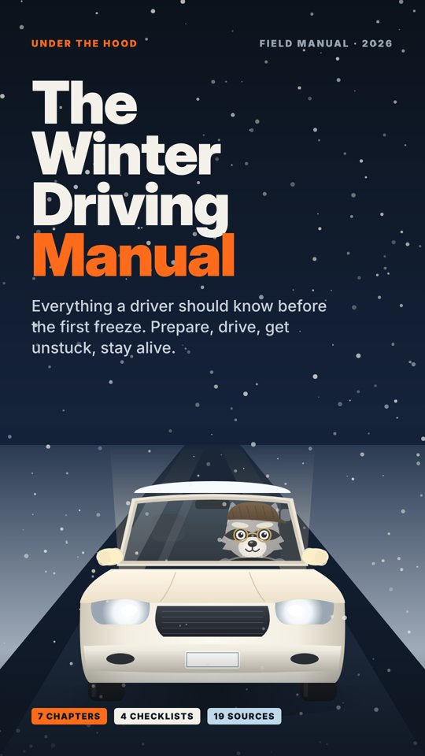
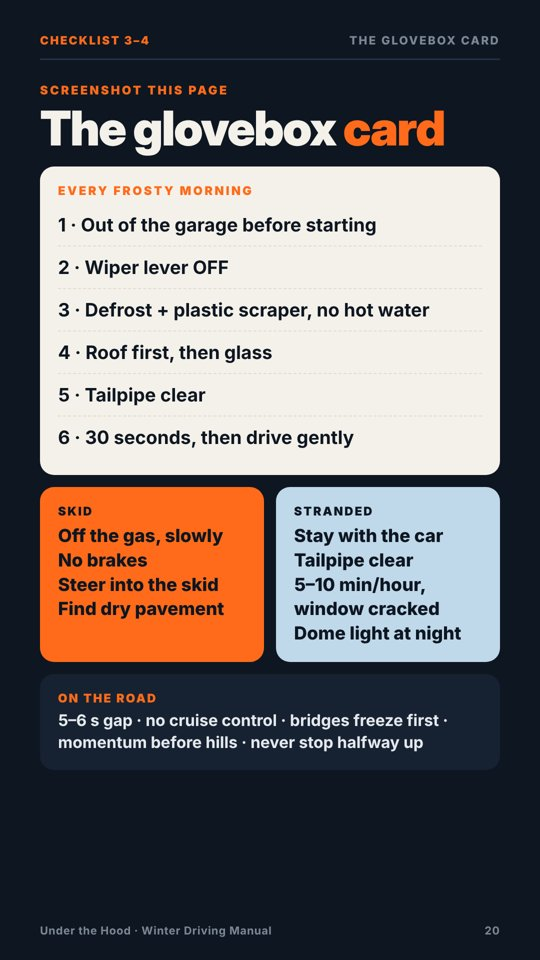

Free · Under the Hood
The Winter Driving Manual
Everything a driver should know before the first freeze. Prepare, drive, get unstuck, stay safe. 23 pages, 4 checklists, every number traced to NHTSA, AAA, CDC, driver handbooks and carmakers.
Download the manual (PDF, 1 MB)Made for your phone. Free, no sign-up.


- Battery, tires, fluids: the 10-minute check
- The trunk kit and the frosty-morning routine
- Speed, distance, braking, hills and skids on snow and ice
- Stuck or stranded: what to do, minute by minute
- Electric cars in the cold, kids' coats, static at the pump, road salt
A new car truth every day. Short, sourced videos on Instagram: @underthehood1.cars